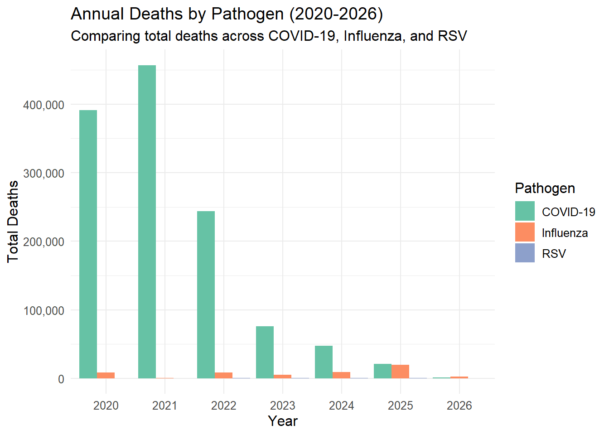

CDC Provisional Percent of Deaths for COVID-19, Influenza, and RSV by Select Characteristics Data Processing Exercise
This dataset contains the provisional percent of total deaths by week for COVID-19, Influenza, and Respiratory Syncytial Virus for deaths occurring among residents in the United States, by sex, age group, and race and Hispanic origin.This dataset was taken from the CDC website and can be found at the following link.
* year: a numerical value denoting a year between 2018-2025
* weekending_date: date of the weekend of the week the data was recorded for
* demographic_type: demographic type has been processes to only include Age Group
* demographic_values: text denoting what age group that data is for (0-17 years, 18-64 years, 65+ years)
* pathogen: RSV, COVID-19, Influenza, or Combined
* deaths: number of deaths involving pathogen for that week for that age group
* total_deaths: deaths from all causes of death
Clean Data
library(tidyverse)
── Attaching core tidyverse packages ──────────────────────── tidyverse 2.0.0 ──
✔ dplyr 1.1.4 ✔ readr 2.1.6
✔ forcats 1.0.1 ✔ stringr 1.6.0
✔ ggplot2 4.0.1 ✔ tibble 3.3.1
✔ lubridate 1.9.4 ✔ tidyr 1.3.2
✔ purrr 1.2.1
── Conflicts ────────────────────────────────────────── tidyverse_conflicts() ──
✖ dplyr::filter() masks stats::filter()
✖ dplyr::lag() masks stats::lag()
ℹ Use the conflicted package (<http://conflicted.r-lib.org/>) to force all conflicts to become errors
library(scales)
Attaching package: 'scales'
The following object is masked from 'package:purrr':
discard
The following object is masked from 'package:readr':
col_factor
library(lubridate)library(dplyr)#AI tools were used to help understand the mutate function#Read and clean data#Removing any commas in the numbers and fixing any null values by replacing them with zerodata_clean <-read_csv("Provisional_Percent_of_Deaths_for_COVID-19,_Influenza,_and_RSV_by_Select_Characteristics_20260210.csv") %>%mutate(deaths =as.numeric(gsub(",", "", deaths)),total_deaths =as.numeric(gsub(",", "", total_deaths)),weekending_date =ymd(weekending_date) ) %>%replace_na(list(deaths =0))
Rows: 20208 Columns: 17
── Column specification ────────────────────────────────────────────────────────
Delimiter: ","
chr (7): group, state, demographic_type, demographic_values, pathogen, prov...
dbl (4): year, month, mmwr_week, percent_deaths
num (2): deaths, total_deaths
date (4): data_as_of, start_date, end_date, weekending_date
ℹ Use `spec()` to retrieve the full column specification for this data.
ℹ Specify the column types or set `show_col_types = FALSE` to quiet this message.
#Removing additional columns to simplify analysisdata_clean <- data_clean %>%select(-data_as_of, -start_date, -end_date, -group,-month, -state, -mmwr_week, -provisional, -suppressed, -percent_deaths)#Removing rows that calculate other demographic groups outside of Age Groupdata_clean <- data_clean %>%filter(grepl("Age Group", demographic_type))
#AI tools were also used to clean up graphs# Time Series - Weekly Deaths by Pathogendata_clean %>%filter(pathogen !="Combined") %>%group_by(weekending_date, pathogen) %>%summarise(total_deaths =sum(deaths, na.rm =TRUE), .groups ="drop") %>%ggplot(aes(x = weekending_date, y = total_deaths, color = pathogen)) +geom_line(linewidth =0.8) +scale_y_continuous(labels =label_comma()) +scale_color_brewer(palette ="Set1") +theme_minimal() +labs(title ="Weekly Deaths Over Time by Pathogen (2018-2026)",subtitle ="Time series showing the progression of deaths from COVID-19, Influenza, and RSV",x ="Week Ending Date",y ="Total Deaths",color ="Pathogen" ) +theme(text =element_text(size =12),legend.position ="bottom" )
# Yearly Comparison - Total Deaths by Pathogendata_clean %>%filter(pathogen !="Combined", year >=2020) %>%group_by(year, pathogen) %>%summarise(total_deaths =sum(deaths, na.rm =TRUE), .groups ="drop") %>%ggplot(aes(x =factor(year), y = total_deaths, fill = pathogen)) +geom_bar(stat ="identity", position ="dodge") +scale_y_continuous(labels =label_comma()) +scale_fill_brewer(palette ="Set2") +theme_minimal() +labs(title ="Annual Deaths by Pathogen (2020-2026)",subtitle ="Comparing total deaths across COVID-19, Influenza, and RSV",x ="Year",y ="Total Deaths",fill ="Pathogen" ) +theme(text =element_text(size =12))

# Age Group Distribution - Stacked Proportionsdata_clean %>%filter(pathogen !="Combined", demographic_type =="Age Group", year ==2025) %>%group_by(pathogen, demographic_values) %>%summarise(total_deaths =sum(deaths, na.rm =TRUE), .groups ="drop") %>%group_by(pathogen) %>%mutate(proportion = total_deaths /sum(total_deaths)) %>%ggplot(aes(x = pathogen, y = proportion, fill = demographic_values)) +geom_bar(stat ="identity", position ="fill") +scale_y_continuous(labels =percent_format()) +scale_fill_brewer(palette ="Set3") +theme_minimal() +labs(title ="Age Distribution of Deaths by Pathogen (2025)",subtitle ="Proportional breakdown showing which age groups are most affected",x ="Pathogen",y ="Proportion of Deaths",fill ="Age Group" ) +theme(text =element_text(size =12))
# COVID-19 Focus - Timeline by Age Groupdata_clean %>%filter(pathogen =="COVID-19", demographic_type =="Age Group", year >=2020) %>%group_by(weekending_date, demographic_values) %>%summarise(total_deaths =sum(deaths, na.rm =TRUE), .groups ="drop") %>%ggplot(aes(x = weekending_date, y = total_deaths, color = demographic_values)) +geom_line(linewidth =1) +scale_y_continuous(labels =label_comma()) +scale_color_brewer(palette ="Dark2") +theme_minimal() +labs(title ="COVID-19 Deaths Over Time by Age Group",subtitle ="Weekly trends showing differential impact across age groups",x ="Week Ending Date",y ="Total Deaths",color ="Age Group" ) +theme(text =element_text(size =12),legend.position ="bottom" )
# Recent Trends - Last 12 Monthsdata_clean %>%filter(pathogen !="Combined", weekending_date >=max(weekending_date) -months(12)) %>%group_by(weekending_date, pathogen) %>%summarise(total_deaths =sum(deaths, na.rm =TRUE), .groups ="drop") %>%ggplot(aes(x = weekending_date, y = total_deaths, color = pathogen, fill = pathogen)) +geom_line(linewidth =1) +geom_area(alpha =0.3) +scale_y_continuous(labels =label_comma()) +scale_color_brewer(palette ="Set1") +scale_fill_brewer(palette ="Set1") +theme_minimal() +labs(title ="Recent Trends: Last 12 Months",subtitle ="Current state of respiratory disease mortality",x ="Week Ending Date",y ="Total Deaths",color ="Pathogen",fill ="Pathogen" ) +theme(text =element_text(size =12),legend.position ="bottom" )
Based on these exploritory plots, the mass majority of pathogen deaths consist of the 65+ year old demographic, including a disproportionally large spike in 2020-2022. COVID-19 deaths are on average higher than those caused by RSV and Influenza. COVID-19 had a very large spike in 2021 and has decreased since then.
Synthetic Data (Alex)
This section contributed by Alex Tejada-Strop.
I generated a synthetic dataset with the same structure as the cleaned dataset (data_clean). Categorical variables were sampled using the same proportions as the original data, and numeric death counts were simulated using a Poisson-based approach based on the original averages. The synthetic data should look similar overall but will not match exactly because it is randomly generated.
# AI was used for guidance in structuring synthetic data generation and troubleshooting minor coding errors.set.seed(123)orig <- data_cleann <-nrow(orig)# Helper function to sample categorical variablessample_like <-function(x, size) { probs <-prop.table(table(x))sample(names(probs), size = size, replace =TRUE, prob =as.numeric(probs))}# Helper function for count-style numeric variablesmake_counts <-function(x, size) { mu <-mean(x, na.rm =TRUE) mu <-ifelse(is.na(mu) || mu <0.1, 1, mu)rpois(size, lambda = mu)}syn <-tibble(year =sample_like(orig$year, n),weekending_date =sample(orig$weekending_date, n, replace =TRUE),demographic_type =sample_like(orig$demographic_type, n),demographic_values =sample_like(orig$demographic_values, n),pathogen =sample_like(orig$pathogen, n),deaths =make_counts(orig$deaths, n),total_deaths =make_counts(orig$total_deaths, n)) %>%mutate(total_deaths =pmax(total_deaths, deaths))glimpse(syn)